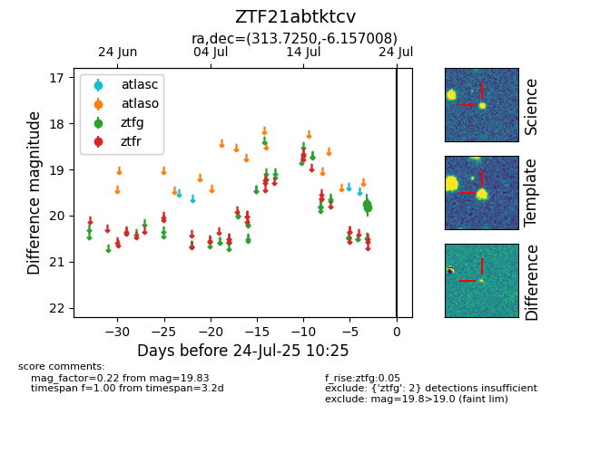

Target ZTF21abtktcv at 2025-08-06 17:27, see:
FINK: fink-portal.org/ZTF21abtktcv
Lasair: lasair-ztf.lsst.ac.uk/objects/ZTF21abtktcv
ALeRCE: alerce.online/object/ZTF21abtktcv
alt names
ZTF21abtktcv (ztf,fink)
coordinates:
equatorial (ra, dec) = (313.7250,-6.15701)
galactic (l, b) = (42.0601,-30.18926)
photometry
last ztfg=19.83
2 ztfg detections
